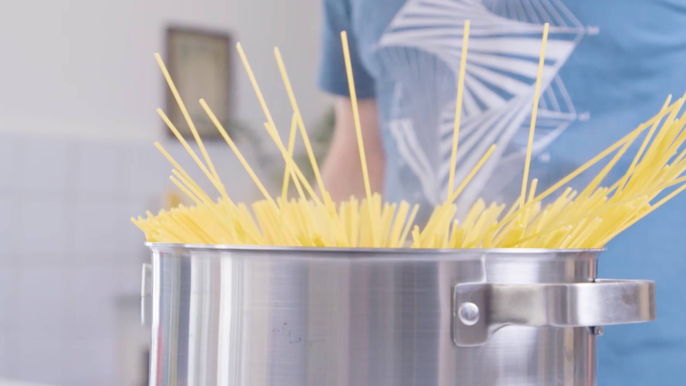

Hey, heute zeige ich dir ein einfaches und dennoch unglaublich leckeres Rezept, das deine Geschmacksknospen zum Tanzen bringen wird. Wir werden eine köstliche Pasta zubereiten, bei der die Aromen von frischen Tomaten, Knobluch und Peperoni im Vordergrund stehen. Lass uns loslegen und gemeinsam in die Welt der italienischen Küche eintauchen!
Zutaten
für 4 Portionen
Menge
Zutat
500 g
Spaghetti
1
Tomate
5
Knoblauchzehen
2
Peperoni
5 EL
Petersilie
2 TL
Gemüsebrühepulver
100 ml
Olivenöl, nativ
40 g
Hartkäse
1 TL
Basilikum
1 TL
Oregano
1/2 TL
Salz
Die Zutaten für Spaghetti aglio, olio e peperoncino
Nährwerte pro Portion
kcal
713
Kohlenhydrate
91,62 g
Eiweiß
18,77 g
Fett
29,83 g
Rezept

Die Spaghetti nach Packungsanleitung kochen. Kurz vor Ende der Garzeit 2 Kellen vom Kochwasser
entnehmen und beiseite stellen.
Den Hartkäse mit einer Reibe zerkleinern. Die Tomate in kleine Würfel schneiden und in eine Schüssel
geben. Den Knoblauch klein schneiden, leicht salzen, kurz warten und zerdrücken, bis eine Paste
entsteht. Die Knoblauchpaste ebenfalls in die Schüssel geben.
Basilikum, Oregano, Petersilie und Peperoni ebenfalls klein schneiden und zur Würzmischung in der
Schüssel geben. Das Delikatessbrühepulver hinzufügen. Die 2 Kellen Kochwasser dazugießen und alles
gut verrühren. Die Würzmischung 2 Minuten ziehen lassen und abschmecken.
Die gekochten Spaghetti gut abtropfen lassen und in einer heißen Pfanne maximal 1 Minute schwenken.
Anschließend die Würzmischung hinzufügen und gründlich durchschwenken. Den geriebenen Hartkäse hinzufügen,
der als Bindemittel dient und sich mit der flüssigen Würzmischung verbindet.
Vor dem Servieren das kalte Olivenöl über die Pasta geben und vermischen. Nicht vorher, da das Öl
seinen Geschmack und seine Qualität verliert, wenn es erhitzt wird. Bei Bedarf zusätzlichen Hartkäse
darüberstreuen.
Genieße die perfekt zubereiteten Spaghetti mit dieser aromatischen Würzmischung und lass dich von den authentischen italienischen Geschmacksnoten verwöhnen. Die richtige Zubereitung macht den Unterschied!
Fazit
Und da hast du es! Eine wunderbare Pasta-Kreation, die dich mit ihren intensiven Aromen und der
perfekten
Kombination von Tomaten, Knoblauch und Peperoni begeistern wird. Der frische Geschmack der Petersilie
und
die herzhafte Note des Hartkäses runden das Gericht ab. Gieße dir eine Portion dieser köstlichen
Spaghetti ein, lehn dich zurück und genieße das italienische Flair, das diese Mahlzeit mit sich bringt.
Buon appetito!
Über den Autor
Dieses Rezept stammt von einem kreativen Küchenmeister, der mit Leidenschaft und Hingabe
unvergleichliche
kulinarische Kreationen zaubert. Seine Vielfalt an köstlichen Gerichten ist eine wahre Gaumenfreude und
lädt
dazu ein, die Welt der Aromen zu entdecken.